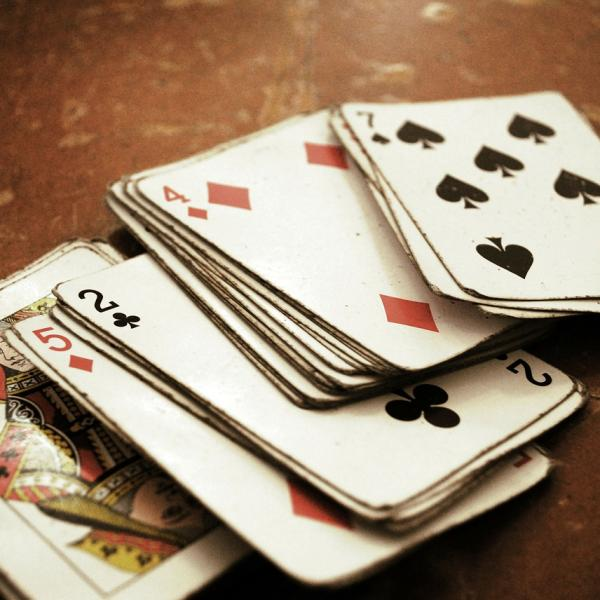

É um jogo de vazas jogado com o baralho espanhol, por dois, quatro ou seis jogadores, divididos em dois lados opostos. As regras do jogo são simples, o baralho gira em torno de fazer rodadas, teram três rodadas e o objetivo é fazer duas, fazendo isso você conseguira 1 ponto, e para vencer são 12 pontos, a ordem de força das cartas são, 4,5,6,7 dama,valete,rei,ás,dois,e três, sendo que o 5 mata o 4, e o 6 mata o 5 e o 4, e assim por diante. A manilha, é a carta mais forte do jogo sendo manilha a proxima carta que vem depois da carta virada, por exemplo, se virar o 6, a manilha será o 7, sendo a força dos nipes do mais fraco pro mais forte o ouros, o espada, o copa e o paus. Agora os trucos funciona, quando você aposta trẽs pontos para fazer a rodada, se o jogador aceitar, se ele correr é apenas um ponto, sendo que da para pedir até 6,9 e 12.
